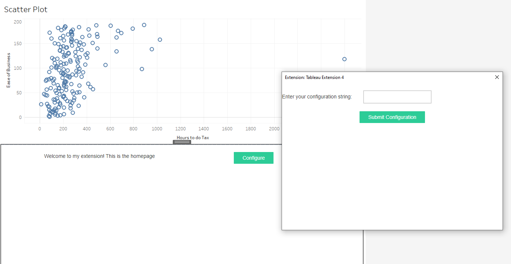

Displaying a popup within Tableau
Anvil apps can use the alert function to create a popup window inside the App. However, alerts are confined to the space the extension takes up in the dashboard and can’t be opened independently of the dashboard. To create a popup from our extension that opens outside of the extension itself, we’ll need to use the underlying JS api.
Once we’re done, we’ll have an extension that looks like this:
To start, you’ll need to create 2 forms in Anvil.
Homepage: This is main extension pageButton called
btn_config, click bound tobtn_config_clickLabel called
lbl_config_settingLabel called
lbl_home
Configure: This is the configuration page (what pops up)Button called:
btn_submit, click bound tobtn_submit_clickLabel called:
lbl_configText box called:
tb_config
Once we’ve got those 2 forms created, we’ll add the code in each. Let’s start with Homepage
# Homepage Form (boilerplate imports removed)
from ._anvil_designer import HomepageTemplate
import anvil
from anvil import tableau
from ..Configure import Configure
class Homepage(HomepageTemplate):
def __init__(self, **properties):
self.init_components(**properties)
# If the hash is a dictionary that means
# we've arrived from the popup_url so we
# open the Configure form
if isinstance(anvil.get_url_hash(), dict):
self.clear()
self.add_component(Configure())
def btn_config_click(self, **event_args):
"""This method is called when the config button is clicked"""
popup_url = 'https://REN6GWNXX6Y5PODR.anvil.app/XSSTXHFCGLCZZD3JYIQD3DM3/#!?entry=popup'
tableau.extensions.initializeDialogAsync()
out = tableau.extensions.ui.displayDialogAsync(popup_url)
self.lbl_config_setting.text = out
This is a bit chicken and the egg but I’ll start with the btn_config_click. When a user loads the extension, they’ll see the configure button which will open the popup. We open the popup by:
First call
tableau.extensions.initializeDialogAsync()Then, use
displayDialogAsyncand pass the apps url, along with#!?entry=popupappendedWe’ll save this into a variable called
outwhich will contain a string that we define in theConfigureform
Finally, we set the text of
lbl_config_settingto be the value returned from the popup
Let’s move to the Configure form. Add the following:
# Configure Form (boilerplate imports removed)
from ._anvil_designer import ConfigureTemplate
from anvil import tableau
class Configure(ConfigureTemplate):
def __init__(self, **properties):
self.init_components(**properties)
def btn_submit_click(self, **event_args):
"""This method is called when the Submit Configuration button is clicked"""
tableau.extensions.ui.closeDialog(self.tb_config.text)
Now add the trex file to the dashboard (see /guides/download_trex/downloadtrex) and click “Configure”. The popup should appear, and whatever text you enter in the text box will appear once you close the dialog box with “Submit Configuration”.
Here’s what your extension should look like now
Click here to clone the Anvil app
And here for the Tableau workbook